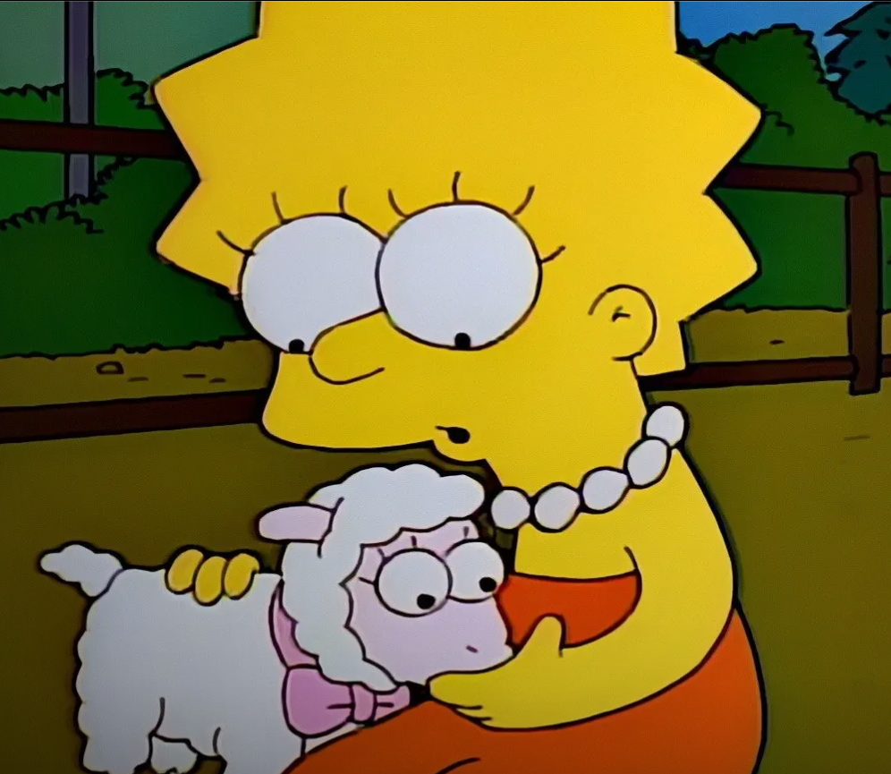

Capítulo
Capítulo
Cuando Flanders falló
Ned Flanders abre una tienda para zurdos. Cuando el negocio empieza a ir mal, Homer deberá decidir si ayuda a su vecino.
Temporada 3, episodio 3.
Ver fichaUna guía de capítulos y personajes de Los Simpson.
Tres episodios que todo fan debería ver.
Capítulo
Ned Flanders abre una tienda para zurdos. Cuando el negocio empieza a ir mal, Homer deberá decidir si ayuda a su vecino.
Temporada 3, episodio 3.
Ver ficha Capítulo
Capítulo
Homer participa en un programa de la NASA que envía a un ciudadano corriente al espacio, con resultados inesperados.
Temporada 5, episodio 15.
Ver ficha
CapítuloLisa decide dejar de comer carne y trata de que su familia respete su nueva forma de pensar.
Temporada 7, episodio 5.
Ver fichaDos caras imprescindibles de Springfield.
 Personaje
Personaje
Inspector de seguridad de la central nuclear y amante de las rosquillas.
Más infoPilar de la familia, reconocible por su paciencia y su inconfundible pelo azul.
Más infoConsulta la temporada y el episodio de cada historia.
| Título | Temporada | Episodio |
|---|---|---|
| Cuando Flanders falló | 3 | 3 |
| Homer en el espacio exterior | 5 | 15 |
| Lisa la vegetariana | 7 | 5 |
Escribe a la tienda de Springfield.